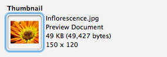

To assign the contents of a file to a property:
Use Finder to locate the required file.
Drag the file from Finder to Cornerstone. Drop the file on the property's drop area:
The contents of the file are read and assigned to the property:

Click the Save Changes button.
To extract the contents of a property to a file:
Click the file thumbnail from the property's drop area:
Drag the thumbnail to Finder. Drop the thumbnail in the location where the file should be saved.
The contents of the property are extracted and stored as a file in the chosen location:
To remove a file property:
Select the thumbnail by clicking in the property's drop area:
Press the Delete.
The thumbnail is removed from the property's drop area:
Click the Save Changes button .
Cornerstone stores additional information about a file property's contents in a sidecar property. This information includes: the original file name, file type, UTI, size, Unix permissions, thumbnail image, dimensions (if applicable) etc.
The name of the sidecar property is the same name as the file property itself with an ":attributes" suffix. For example, the sidecar property for a "thumbnail" property would be named "thumbnail:attributes".
You can prevent Cornerstone from creating sidecar properties by unchecking the Save information about file contents in sidecar properties option in the User Properties preference pane.
Package-format documents (i.e. files that are actually stored on disk as folders) are compressed in .zip format before being stored as a property.